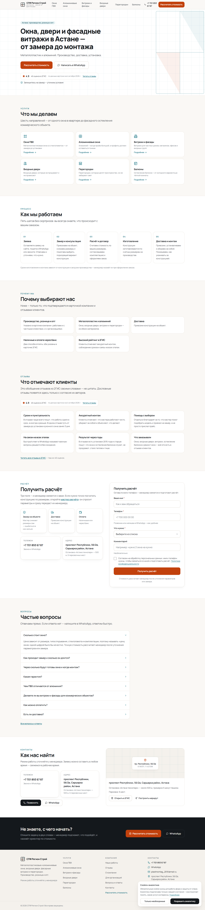
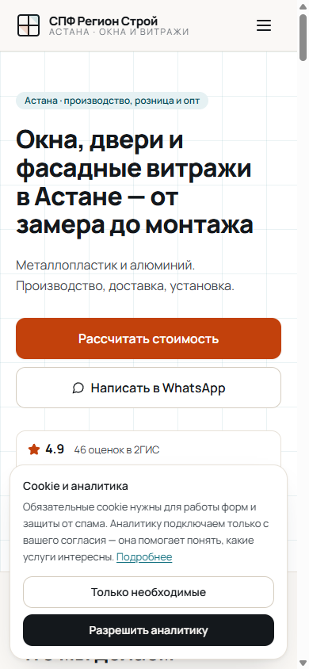
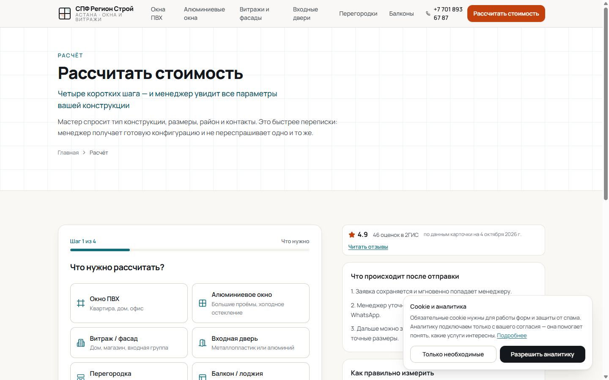
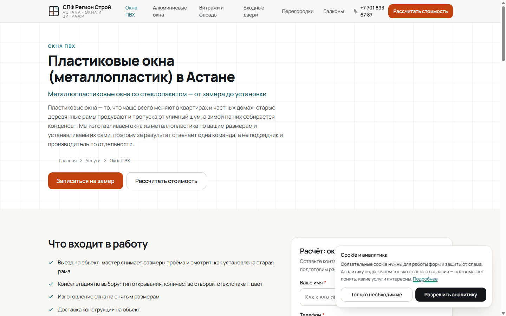
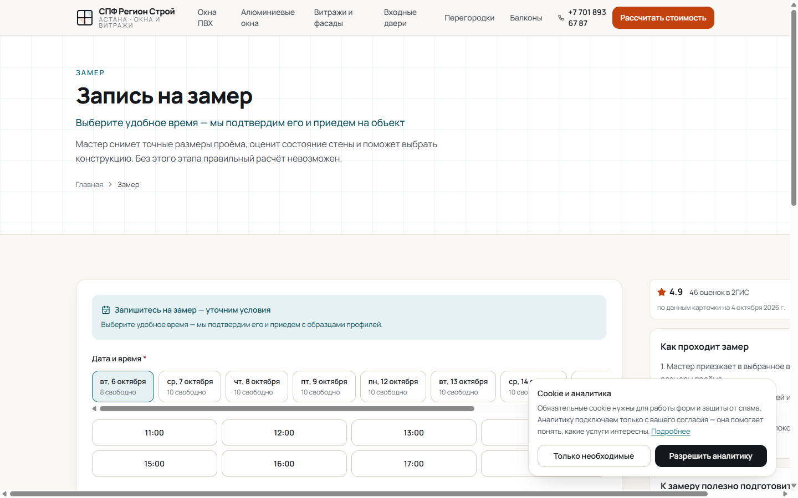
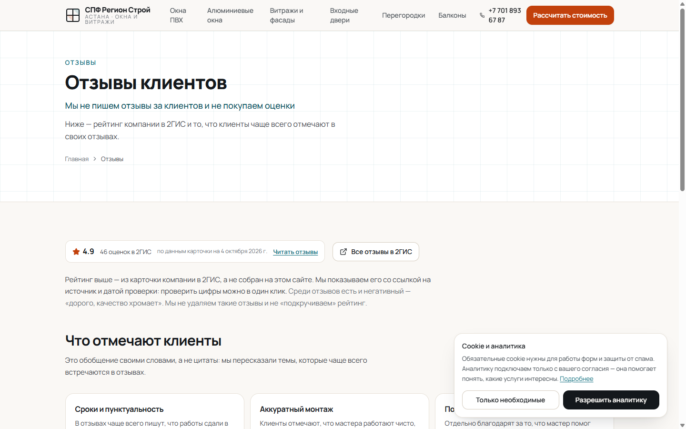

Сайт должен приводить заявку
Не «рассказать о себе», а посчитать, записать и передать: мастер расчёта по параметрам, запись на замер с выбором слота и отдельная форма для организаций.
Кейс · сайт и внутренняя система
Шестнадцать публичных страниц, админка вокруг них, приём заявок с защитой от дублей и уведомлениями в Telegram. И правило, которое оказалось важнее кода: на сайте не публикуется ни один факт, который нельзя подтвердить.
01Задача
Компания из Астаны: окна ПВХ и алюминий, витражи и фасады, входные двери, перегородки, остекление балконов. Карточка в 2ГИС даёт 4,9 из 5 по 46 оценкам и 43 отзыва — материал для доверия уже был. Не было сайта, который этим пользуется.
Не «рассказать о себе», а посчитать, записать и передать: мастер расчёта по параметрам, запись на замер с выбором слота и отдельная форма для организаций.
Цена, гарантия, сроки изготовления, бренды профилей, режим работы — публикуются только после подтверждения владельцем. Иначе это недостоверная реклама, а не смелость.
Ни из-за сбоя Telegram, ни из-за двойного клика, ни из-за повторного обращения того же клиента через час.
02Что построено
Это не витрина с формой «оставьте телефон». Публичная часть, приём заявок, уведомления, админка и аналитика источников — один проект, который разворачивается одной базой.
Главная, шесть страниц услуг (ПВХ, алюминиевые окна, витражи и фасады, входные двери,
перегородки, балконы), мастер расчёта /raschet, запись на замер
/zamer, работы, отзывы, о компании, для организаций, контакты, FAQ и
политика конфиденциальности.
Мотив оконной рамы, тонкие линии, тёплый фон #FAF8F5 и графит
#14181C. Один акцентный цвет — #C2410C: его затемнили с
#EA580C ровно настолько, чтобы белый текст кнопки проходил WCAG AA
(4,5:1). Шрифт Manrope самохостится через next/font — внешних запросов нет.
Закреплённая нижняя панель действий, зоны нажатия не меньше 44 px, поля ввода не меньше 16 px (иначе iOS зумит страницу при фокусе), корректная работа с экранной клавиатурой и безопасной зоной iPhone.
Обзор, заявки, карточка заявки, замеры, галерея, отзывы, утверждения, ссылки и QR,
уведомления, настройки, смена пароля и вход. Три роли — owner,
manager, viewer; сессия — подписанная httpOnly-cookie на
семь дней, пароли только через bcrypt.
03Поток заявки
Пять шагов, и каждый закрывает конкретный способ потерять клиента — самый дорогой из которых выглядит как «форма работает».
POST /api/leads: проверка origin, лимит по IP, honeypot и тайминг
заполнения, Turnstile (если настроен), валидация схемы на Zod и отдельный лимит по
номеру телефона.
Заявка записывается в хранилище до отправки сообщения. Сбой Telegram не может унести с собой клиента.
У каждой отправки свой submissionId: двойной клик по кнопке не создаёт
вторую заявку и не портит статистику.
Тот же телефон в течение 24 часов не создаёт дубль — к существующей заявке добавляется событие «повторное обращение». Менеджер видит историю, а не список клонов.
Уведомление уходит сразу и повторяется по cron при сбое. Если Telegram недоступен — запасное письмо и красная пометка в админке. Молча не теряется ничего.
04Решения
Шесть решений, которые определяют проект. Четыре из них — про то, как не соврать клиенту и не потерять его заявку.
content/claims.ts — механизм, который физически не даёт опубликовать
непроверенный факт: вместо него на странице стоит нейтральная формулировка. Ответ
владельца из админки появляется на сайте сразу, без деплоя.
PRICE_DISPLAY=off: в ответе API нет ни одного числа расчёта. Проверено на
живом сайте — ни одной цены ни на одной из шестнадцати страниц.
Логика приёма заявки живёт в lib/domain и вызывается одинаково из
HTTP-маршрута, Telegram-бота и cron. Добавить WhatsApp-бота в следующей фазе можно, не
переписывая ядро.
PostgreSQL в продакшне и JSON-файл, чтобы проект запускался одной командой без базы.
Драйвер переключается автоматически по DATABASE_URL. Файловый режим —
только для разработки и демонстрации, и это ограничение описано честно.
Фотографии из 2ГИС и Instagram не берутся: у площадок и авторов есть права на контент. Пока владелец не загрузил свои работы, блок на сайте просто не показывается, а на странице «Работы» сказано, почему он пуст.
Клиент выбирает слот, но запись подтверждает менеджер кнопкой в Telegram. Без SMS-подтверждения автоматически подтверждать запись означало бы открыть её для чужих правок.
05Экраны
Снимки живого сайта от 5 октября 2026. На первом заходе виден баннер согласия на аналитику — это тоже часть решения: сторонние счётчики и свои обезличенные события подключаются только после явного разрешения.




/okna-pvh. Шесть направлений разведены по отдельным
страницам со своей структурой, а не свалены списком на главной.

/zamer. Клиент выбирает слот, но запись
подтверждает менеджер кнопкой в Telegram — до подтверждения это запрос, а не бронь.

/otzyvy. Рейтинг 2ГИС со ссылкой на источник; дословные
цитаты появятся только с согласия их авторов.
06Цифры
Цифры ниже я пересчитал по исходникам и живому сайту 5 октября 2026, а не взял из описания проекта.
07Как это делалось
3 октября
Первичная сборка по мастер-промпту, затем редизайн на shadcn-подходе и автоматизация воронки заявок, правки формы и документация автоматизации, а следом аудит с полной переработкой визуальной системы, структуры и SEO. Пять коммитов за один день.
4 октября
Содержимое репозитория заменено новой реализацией: 16 страниц, mobile-first вёрстка, дизайн-система «Свет и геометрия», реестр утверждений, полный поток обработки заявок, админка, документация владельцу и отдельный файл с ограничениями. Именно этот коммит сейчас в продакшне.
5 октября
Прошёл по всем публичным страницам и API-маршрутам: статусы, наличие цен, консоль, ширина на 390 и 1440, sitemap и robots. Пересчитал цифры по исходникам. Нашёл один дефект вёрстки — он в списке ограничений ниже, а не спрятан.
08Результат для компании
Это не метрики трафика — такие цифры появятся, когда сайт начнёт работать на потоке. Это то, что уже встроено в систему.
Даже при сбое Telegram она уже лежит в хранилище, а уведомление повторяется по cron. Молчаливого «мы ничего не получили» не бывает.
Снят риск недостоверной рекламы: неподтверждённый факт физически не может попасть на страницу — его заменит нейтральная формулировка.
Источник и UTM хранятся 30 дней, для 2ГИС, Instagram, WhatsApp и визиток генерируются QR-коды со метками — реклама перестаёт быть лотереей.
Карточка заявки, статусы, замеры, напоминания накануне и утренний дайджест в 09:00 по времени Алматы.
Телефон маскируется в логах (видны только первые и последние цифры), файлы лежат вне публичного каталога и отдаются через защищённый маршрут.
Ядро вызывается из HTTP-маршрута, бота и cron одинаково: WhatsApp-бот, CRM-коннектор или новая страница добавляются без переписывания.
09Что осталось
У проекта есть собственный файл docs/RISKS.md именно для этого: чтобы
ограничения не выяснились в день запуска. Ниже — он плюс то, что я нашёл при проверке.
SITE_URL и CRON_SECRET. Нет
DATABASE_URL — значит работает файловый драйвер во временном каталоге, и
заявки не переживут перезапуск инстанса.
SESSION_SECRET — вход в админку в продакшне падает с ошибкой.
TELEGRAM_BOT_TOKEN и TELEGRAM_LEADS_CHAT_ID — заявка
сохранится, но менеджер о ней не узнает.
npm run db:migrate. Схема написана
на обычном SQL и переносится куда угодно.
/politika — рабочий шаблон, а не юридический документ: нужна проверка
юристом и решение о хранении данных в Казахстане.
10Источники
Все цифры в кейсе — из исходного кода проекта и живого сайта, проверено 5 октября 2026.
ignatvanuskin-sys/SPF-Region-Stroy
docs/MASTER_PROMPT.md (77 КБ),
docs/OWNER_GUIDE.md — инструкция владельцу,
docs/RISKS.md — ограничения и требования к продакшну